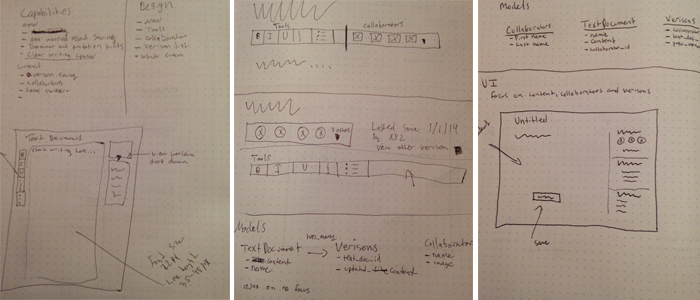

Baby steps
I am a better write because of Basecamp's text documents. I wanted to improve them. Scroll down for insights into my process.

Until recently text documents were my go to place for writing. I now use Draftin, Zenpen.io and the Hemingway app. They inspired the redesign to be simple and focus on the words. The white background keeps your attention on what your typing.
Concept
Just looking at the image above your thinking, what hell man you just changed the background from yellow to white. That's true, but there is more to it than that.
